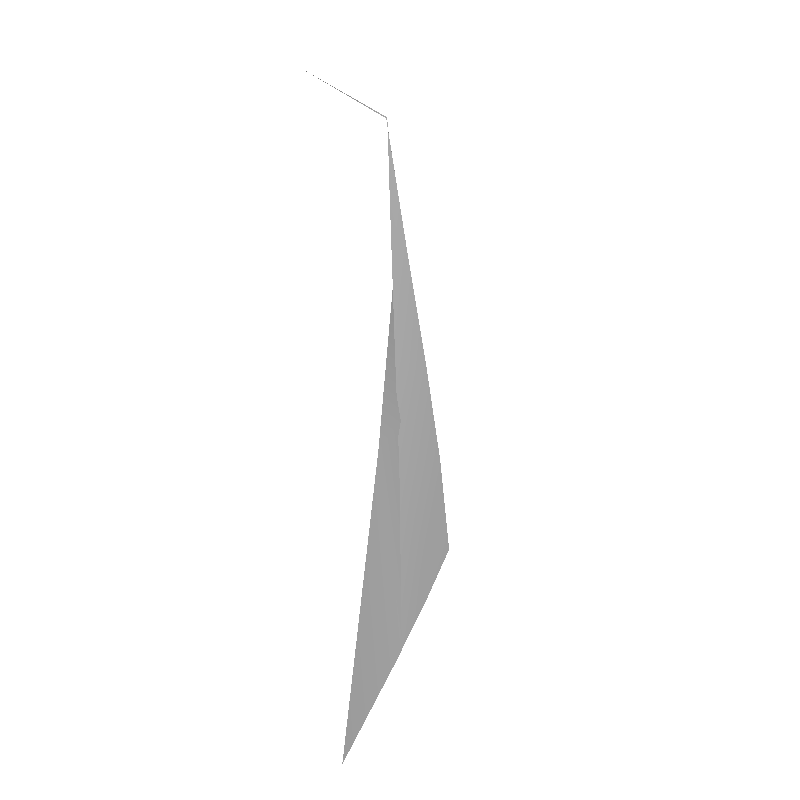
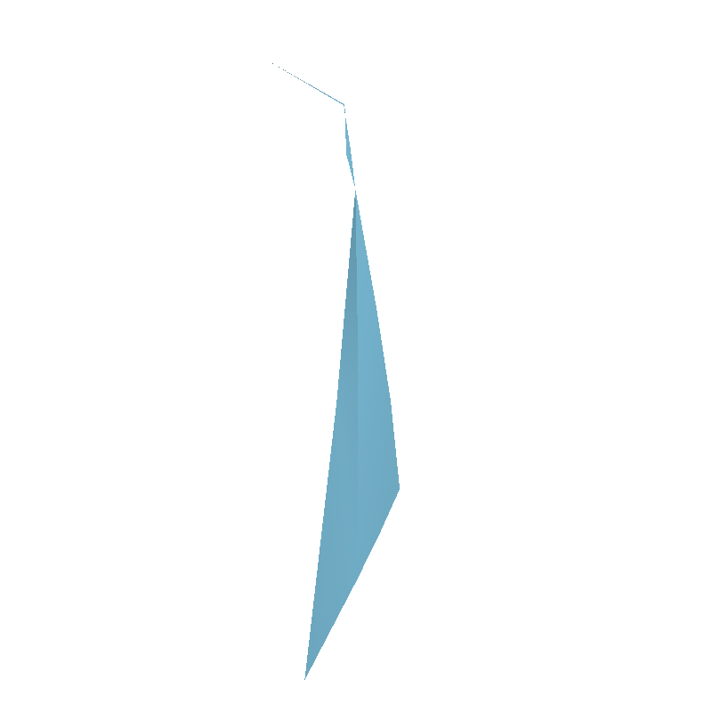

新增单题格式就绪，正式 Linux 准入待完成
质量不佳的曲线使布尔融合长时间不返回。当前验证资源内完成及有效非空结果；原例的完整布尔语义仍需独立校验。
图片来自真实 OCCT DRAW 视口；不是生成的示意图。 第一张为输入，第二张为 F 的结果；B 没有完成，不能伪造 B 完成结果图。


| 角色 | 案例 | 结果 |
|---|---|---|
| B | original | timeout |
| B | regression | geometry_pass |
| F | neighbor_reverse | geometry_pass |
| F | neighbor_shift | geometry_pass |
| F | original | geometry_pass |
| F | regression | geometry_pass |
| negative | original | geometry_fail |
本轮使用仓库标准断言接口和既有 runner/oracle，不复制每道题独立运行器。68 次格式转换后本地执行中，F 的 32 项通过，8 个结果替换负对照被拒绝。
Linux 缓存、构建与沙箱验证尚未完成。新增条目设置 pending_requirements，不能把本页结果当成正式准入。23985、23998 的支撑／覆盖与 29038 的完整布尔语义也保留待补。
Windows 数值断言运行使用 B/F 相同的浮点陷阱屏蔽兼容设置，未放宽数值容差。